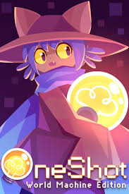

| Fotos dos Jogos | Nome do jogo | Preço | Encontrado na | Link | Trilha Sonora |
|---|---|---|---|---|---|
|  | OneShot | R$ 32,99 | Steam, itch.io | Dê um Google |
Eleventh Hour |

|
Ori and the Blind Florest | R$ 116,10 | Steam | Dê um Google |
Ginso Tree |

|
Hollow Knight | R$ 46,99 | Steam | Dê um Google |
Greenpath |